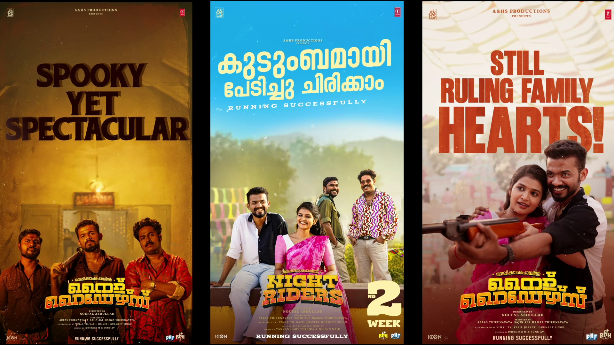
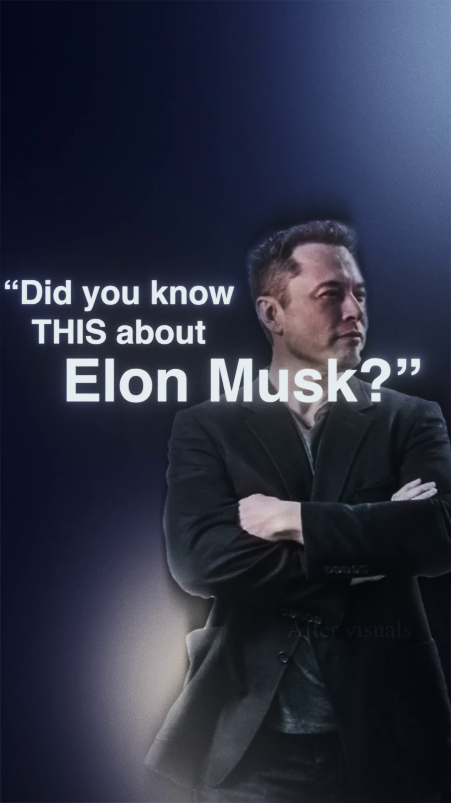
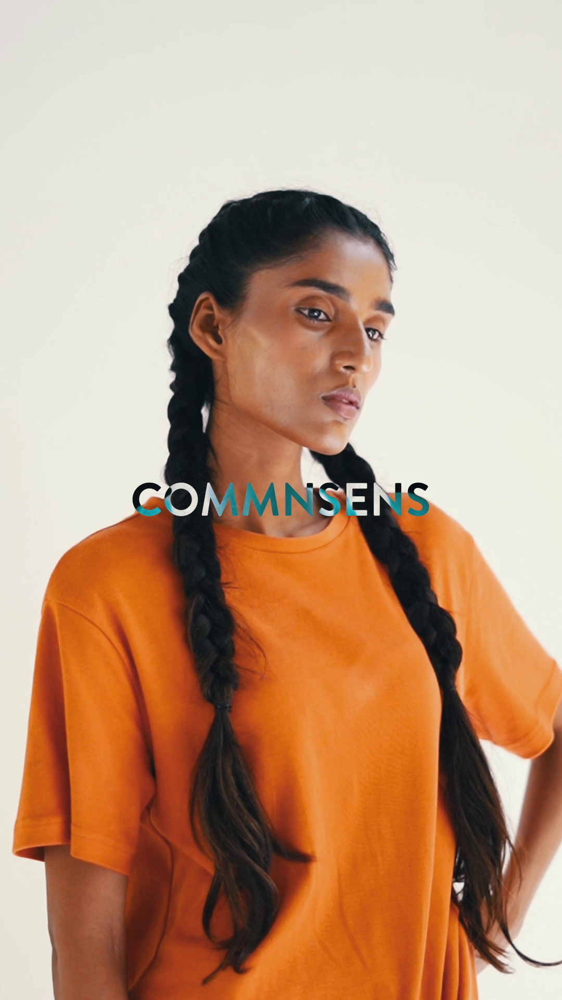
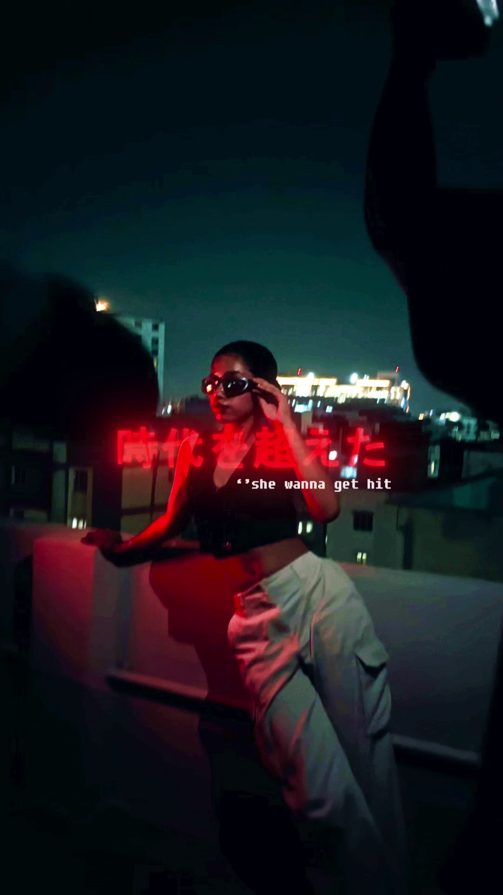
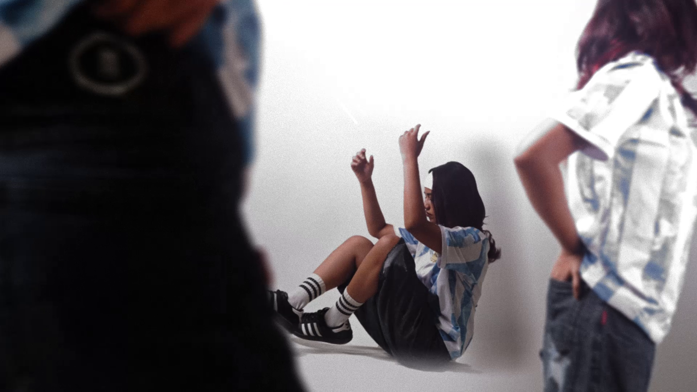
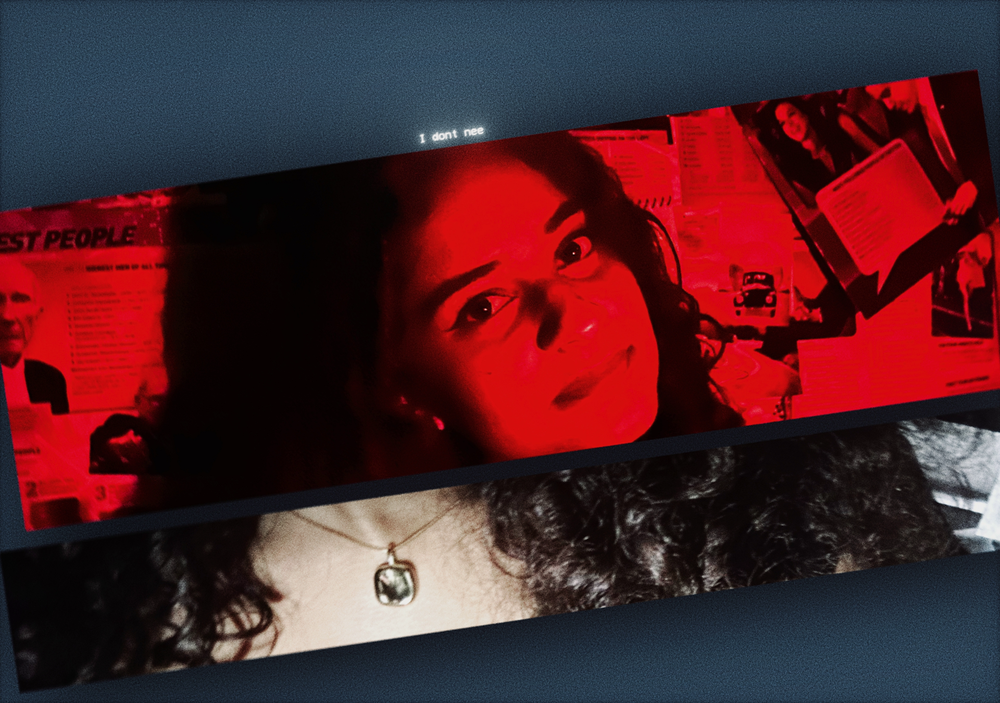

MotionView ↗
I design visual identities, motion pieces and edits with a focus on clarity, rhythm and impact.
Scroll to work↓A selection of motion, VFX, editing and visual work.







Nothing here yet.
I'm Abhishek TP, a graphic designer and motion artist from Kerala. I build visual work that feels intentional — from the first frame to the final detail.
I work across graphic design, motion graphics, VFX, video editing, color and sound. My approach is simple: understand the idea, find the visual language, then make every frame earn its place.
Available for freelance projects, collaborations and selected creative work.
Instagram ↗